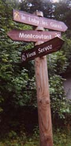

camp des Gures, « dolmen » de Labby (940 m)

Départ : pont des Lanternes (805 m)
Aller : 0,9 km, +135 m, 23 min
Retour : 0,9 km, - 135 m, 15 min
Difficulté : E
Période : mai - novembre
Remarque : pour les passionnés d’archéologie.
Bibliographie : Sentiers du Mt Blanc (itinéraire 414), revue VATUSIUM n° 1 entièrement consacrée au site (ISSN 1289 0073, consultable aux Archives Départementales à Annecy).
Petit circuit en forêt, balisé en jaune. Il traverse le vieux mur d’enceinte du camp gaulois peu avant le plateau sommital. Le « dolmen » n’est qu’une appellation, mais il offre une jolie vue sur la vallée et un mur d’enceinte romain.
A la descente, le circuit évite malheureusement la belle « table aux sacrifices » (bordée d’une rigole ; en contrebas à D), puis descend par les restes de l’ancienne « porte d’accès » du camp romain (au sol, trois encoches carrées).
Camp déjà utilisé par les Allobroges avant les Romains.